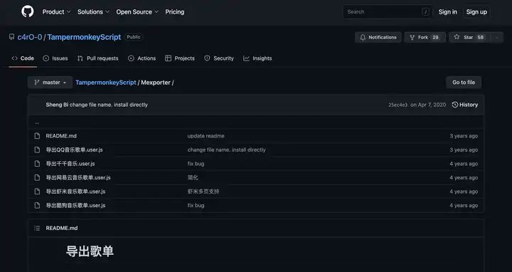

歌单迁移｜网易云 to Spotify/Apple Music｜fate.Tampermonkey、Tune My Music

📑 目录
Q:支持Spotify吗？A：yes
所使用的三种工具：1、[Tune My Music]（需要科学上网）
2、Chrome
3、猴油脚本。
整体思路：
下文介绍的一款猴油脚本会自动抓取网易云歌单里的歌曲名称、歌手、专辑等信息，并以.txt格式储存。在Tune My Music上传这个文件，他可以在指定的音乐平台创建copy的歌单**
由于是自动抓取音乐的名称和歌手等信息，一些独家或各个平台内歌名不统一的音乐会提示导入失败。返回导入失败的列表，可以手动添加或修改名称。导入失败的概率大约在40/500首。
>>>开始
第一步：安装运行自动抓取脚本的平台——猴油脚本，进入它的官网[https://www.tampermonkey.net/scripts.php]下载安装
第二步：在猴油脚本内搜索「导出网易云音乐歌单」，然后点击会跳转到GitHub仓库，我们直接找到并打开作者的[Mexporter]文件夹，点击“导出网易云音乐歌单”然后点击raw按钮运行/安装脚本。也可以尝试通过URL安装，或者复制全部代码自己添加。
第三部：确认安装完成后，登录网页版网易云，进入需要导出的歌单，点击导出歌单
第四步：成功导出歌单后进入迁移工具[https://www.tunemymusic.com/zh-cn/]
选择并上传文件
选择目的地，Apple music
然后等待完成就好了
